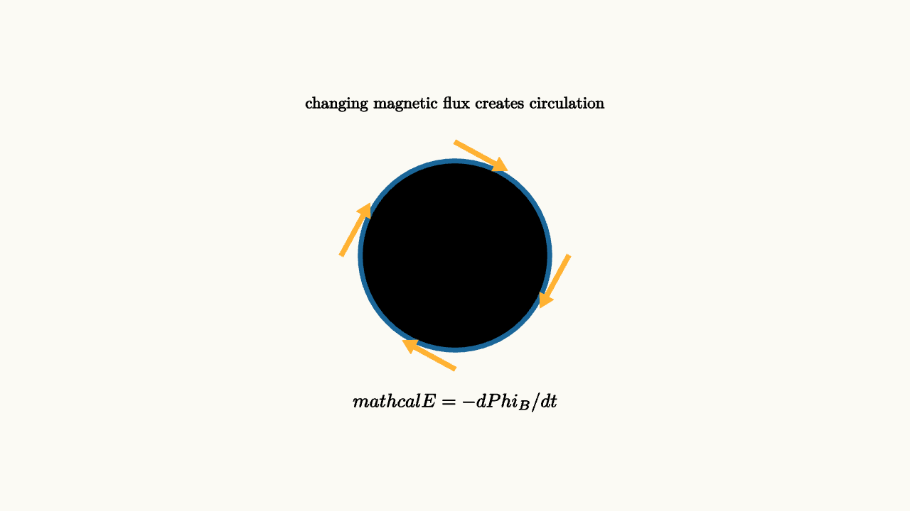

Induction Makes Changing Fields Push Charge
Hold a wire loop near a magnet and nothing dramatic may happen. Move the magnet, and a current appears. Stop moving it, and the current disappears. The lesson is strange at first because magnetism seems to create electricity only when something changes.
Faraday's law gives the precise rule:
The symbol $\mathcal E$ is electromotive force, the circulation of the electric field around the loop. The magnetic flux $\Phi_B$ measures how much magnetic field passes through the loop:
Change the field strength, the loop area, or the loop's angle, and the flux changes. A changing flux creates an electric field that curls around the changing magnetic field.

source
background = [0.985, 0.98, 0.955, 1]
camera = Camera(4.8b)
mesh diagram = block {
. stroke{BLUE, 4} center{[0, 0, 0]} Circle(1.0)
. color{ORANGE} Arrow(start: [0.0, 1.2, 0], end: [0.55, 0.9, 0])
. color{ORANGE} Arrow(start: [1.2, 0.0, 0], end: [0.9, -0.55, 0])
. color{ORANGE} Arrow(start: [0.0, -1.2, 0], end: [-0.55, -0.9, 0])
. color{ORANGE} Arrow(start: [-1.2, 0.0, 0], end: [-0.9, 0.55, 0])
. center{[-0.32, 0.13, 0]} Text("B", 0.7)
. center{[0.32, 0.13, 0]} Text("B", 0.7)
. center{[-0.32, -0.34, 0]} Text("B", 0.7)
. center{[0.32, -0.34, 0]} Text("B", 0.7)
. center{[0, 1.6, 0]} Text("changing magnetic flux creates circulation", 0.62)
. center{[0, -1.55, 0]} Tex("\\mathcal E = -d\\Phi_B/dt", 0.72)
}
"induced circulation"
play Fade(0.7)The minus sign is Lenz's law. The induced current acts in the direction that opposes the change in flux. If upward magnetic flux through a loop is increasing, the induced current creates a magnetic field that points downward. If the upward flux is decreasing, the induced current creates a field that points upward.
This is nature's accounting rule for energy. If induced currents helped the original change, a magnet falling through a conducting ring would speed itself up and create energy from nowhere. Instead, the induced current resists the change. You have to do work to keep the motion going, and that work becomes electrical energy and heat.
Motional emf
One common version of induction appears when a conducting bar slides on rails through a magnetic field. Charges in the moving bar feel the magnetic force
Positive charges are pushed to one end, negative charges to the other. A voltage develops across the bar. If the rails form a complete circuit, current flows.
For a bar of length $L$ moving at speed $v$ perpendicular to a field $B$,
This formula is also Faraday's law. The area of the loop grows at rate $Lv$, so the magnetic flux changes at rate $BLv$.
Generators rotate flux
A generator uses the same idea in a repeating way. Rotate a coil in a magnetic field, and the flux through the coil oscillates. The derivative of that flux creates an alternating emf. Mechanical energy becomes electrical energy because external work keeps turning the coil against magnetic opposition.
Transformers use a different kind of changing flux. An alternating current in one coil creates a changing magnetic field in a core. That changing field passes through a second coil and induces a voltage there. No charge crosses from one coil to the other, yet energy transfers through the changing electromagnetic field.
source
param angle = 0.2
background = [0.985, 0.98, 0.955, 1]
camera = Camera(4.8b)
let Coil = |angle| block {
. color{GREEN} Arrow(start: [-2.6, -0.8, 0], end: [-2.6, 0.8, 0])
. color{GREEN} Arrow(start: [2.6, -0.8, 0], end: [2.6, 0.8, 0])
. color{GREEN} Arrow(start: [-1.3, -0.8, 0], end: [-1.3, 0.8, 0])
. color{GREEN} Arrow(start: [1.3, -0.8, 0], end: [1.3, 0.8, 0])
. stroke{BLUE, 4} center{[0, 0, 0]} Rect([2.1 * cos(angle) + 0.35, 1.0])
. stroke{ORANGE, 3} Line(start: [0, 0, 0], end: [1.15 * cos(angle), 0.75 * sin(angle), 0])
. center{[0, 1.55, 0]} Text("turning a loop changes its magnetic flux", 0.62)
. center{[0, -1.42, 0]} Tex("\\Phi_B = BA\\cos\\theta", 0.7)
}
"tilted loop"
mesh coil = Coil(angle: $angle)
play Fade(0.6)
"rotate"
angle = 1.35
coil = Coil(angle: $angle)
play Lerp(1.2)The displayed loop is a simplified projection, but the changing width is the point. When the loop turns, the component of its area facing the field changes, so the flux changes.
The lesson to keep
Induction says changing magnetic flux creates a circulating electric field. The induced direction opposes the change that produced it, which keeps energy accounting honest. This single idea explains generators, transformers, inductive sensors, wireless chargers, eddy-current braking, and much of the electrical grid.
The deeper message is that electric and magnetic fields are linked dynamically. A static electric field can come from charge. A circulating electric field can come from changing magnetism.